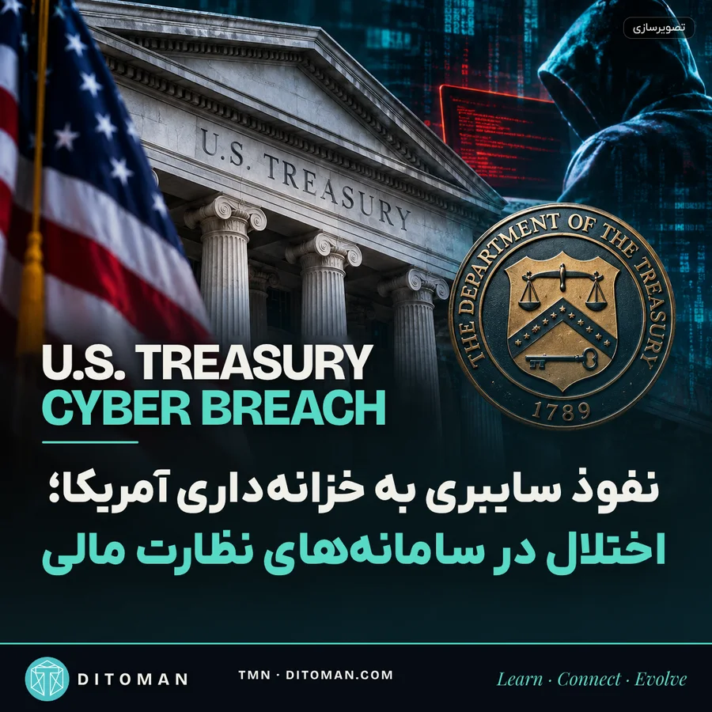

نفوذ سایبری به خزانهداری آمریکا؛ چه میدانیم؟
The US Treasury cyber incident: what we know
دسترسی غیرمجاز به بخشی از سامانههای FinCEN: آنچه تأیید شده، آنچه نامعلوم است و راه جدا کردن تیتر از واقعیت
Unauthorized access to part of FinCEN’s systems: what is confirmed, what is unknown, and how to separate headline from fact
«خزانهداری آمریکا هک شد»؛ این تیتر امروز در شبکههای اجتماعی چرخید. اما بیانیهی رسمی چیز دقیقتری میگوید: یکی از شعبههای خزانهداری، FinCEN، اعلام کرده به بخش محدودی از سامانههایش دسترسی غیرمجاز پیدا شده است. این گزارش میگوید چه چیزی تأیید شده، چه چیزی هنوز معلوم نیست و چطور میشود در اینجور خبرها بین تیتر و واقعیت فرق گذاشت.
در یک نگاه
- چه کسی؟ FinCEN، شبکهی مبارزه با جرایم مالی در وزارت خزانهداری آمریکا
- چه شده؟ «دسترسی غیرمجاز به بخش محدودی از سامانهها»؛ برخی سامانهها بهعنوان احتیاط از دسترس خارج شدهاند
- چه کار میکند؟ سایت ثبت گزارشهای بانکی (BSA E-Filing) فعال است، ولی بعضی خدمات ممکن است موقتاً در دسترس نباشد
- مهلتها: موعد ارسال بخشی از گزارشها تا ۳۰ دسامبر (۹ دی) عقب رفته است
- نامعلوم: سرقت داده، عامل حمله و ارتباط با سایر رخدادها هنوز تأیید نشده
1. چه اتفاقی افتاد؟
۳ آذر ۱۴۰۵ (۲۴ نوامبر):
FinCEN اعلام کرد در حال بررسی یک رخداد امنیتی سایبری است که به «دسترسی غیرمجاز به بخش محدودی از سامانههایش» انجام شده. به گفتهی ABC News، این نهاد برخی سامانهها را بهعنوان اقدام احتیاطی از دسترس خارج کرده، اما نگفته کدامها.
سایت ثبت گزارشها:
وبسایت BSA E-Filing، جایی که مؤسسههای مالی گزارشهای مشکوک را ثبت میکنند، همچنان فعال است؛ هرچند ممکن است برخی خدمات موقتاً در دسترس نباشد. طبق گزارش Sulat، خط تلفن مؤسسههای مالی هم اختلالی نداشته.
اعلام قبلی:
در اطلاعیهی BSA E-Filing در ۲۹ آبان (۲۰ نوامبر)، اختلال در مسیر «ارسال دستهای» (SDTM) گزارش شده بود. FinCEN نگفته این اختلال با دسترسی غیرمجاز یک ماجراست یا نه.
مهلتها:
دستور FIN-2026-R002 (۳ آذر) موعد ارسال را برای سه گروه تا ۳۰ دسامبر عقب برد: ارسالکنندگان دستهای، گزارشدهندگان مالکیت ذینفع و بهروزرسانیکنندگان FinCEN ID. این دستور گزارشهای سررسید ۲۷ آبان تا ۸ دی را پوشش میدهد. متن دستور به «اختلال خدمات» اشاره میکند، نه به رخداد سایبری. FinCEN میگوید ممکن است مهلت را باز هم تمدید کند.
2. FinCEN چیست و چرا مهم است؟
FinCEN یکی از شعبههای وزارت خزانهداری آمریکاست. بانکها و مؤسسههای مالی گزارشهای فعالیت مشکوک و گزارشهای قانونی دیگر را به آن میدهند و FinCEN از آنها برای مبارزه با پولشویی و جرایم مالی استفاده میکند.
پس اختلال در سامانههای آن یعنی اختلال در گزارشدهی مالی؛ نه در پرداختها، نه در بازار اوراق و نه در حساب مردم. چنین خبری برای بانکها و شرکتهایی که گزارش میدهند مهم است، چون مهلتهایشان جابهجا میشود.
3. چه چیزهایی هنوز معلوم نیست؟
- سرقت داده: FinCEN نگفته دادهای برداشته شده یا نه. منابع چیزی نیافتهاند که نشان دهد گزارشهای بانکی باز شده باشد.
- عامل: هیچ نهادی مسئول معرفی نشده است.
- ارتباط با CIA و ODNI: نیویورکتایمز در ساعاتی پیشتر از نفوذ به یک سامانهی اطلاعات منبعباز در این دو نهاد نوشته بود. به نقل از همان گزارش، روشن نیست این دو رخداد به هم ربط دارند و FinCEN هم چنین ارتباطی را اعلام نکرده است.
- بیانیهی وزیر خزانهداری: گزارشی از اظهارنظر مستقیم وزارت یا وزیر دربارهی این رخداد پیدا نکردیم.
4. چطور تیتر و واقعیت را از هم جدا کنیم؟
۱. منبع را بپرس. «خزانهداری هک شد» یک جملهی کوتاه و پرکلیک است؛ بیانیهی رسمی «بخش محدودی از سامانههای یک شعبه» میگوید.
۲. بین «دسترسی» و «سرقت» فرق بگذار. دسترسی غیرمجاز یعنی کسی وارد شده؛ سرقت داده یعنی چیزی برده شده. تا نهاد مربوطه اعلام نکند، دومی ثابت نشده است.
۳. «شاید مرتبط باشد» مدرک نیست. وقتی دو رخداد همزماناند، رسانهها اغلب آنها را به هم وصل میکنند. تا بیانیه نیاید، فقط میشود گفت همزمان بودهاند.
۴. به پستهای تبلیغاتی دقت کن. برخی از پستهای پرتکرار همین خبر در کنار کد تخفیف، پاداش معامله یا پیشبینی بازار آمدهاند. خبر و تبلیغ دو چیزند.
۵. واکنش سریع نشانهی ضعف نیست. قطع احتیاطی سامانه و عقب انداختن مهلتها همان روالی است که سازمانها در رخداد امنیتی طی میکنند.
5. این برای ما چه معنایی دارد؟
برای خوانندهی عادی، پیامی مستقیم برای حساب یا پول ندارد. اما یادآوری خوبی است که زیرساخت مالی هم، مثل هر سیستم دیجیتال دیگر، به امنیت سایبری وابسته است و این حوزه یکی از رشتههای پرتقاضای کاری آینده است: امنیت اطلاعات، پاسخ به رخداد، حسابرسی سایبری و انطباق.
تحلیل دیتومان
آنچه میدانیم: یک نهاد زیرمجموعهی خزانهداری آمریکا دسترسی غیرمجاز به بخش محدودی از سامانههایش را تأیید کرده و برای احتیاط، بخشی را قطع و مهلتها را عقب انداخته است.
آنچه نمیدانیم: دامنهی دقیق، سرقت داده، عامل و ارتباط با رخدادهای دیگر.
نتیجه: تا اطلاعات رسمی بیشتر نیاید، دقیقترین جمله این است: «بخشی از سامانههای FinCEN مورد دسترسی غیرمجاز قرار گرفته و تحقیقات ادامه دارد.» ما این خبر را با هم دنبال میکنیم و اگر بیانیهی تازهای آمد، همینجا بهروز میکنیم.
بیشتر بخوانید
منابع
- ABC News: Treasury's FinCEN says 'cybersecurity incident' includes 'unauthorized access' of some systems (25 Nov 2026)
- Sulat AI & Tech News: FinCEN probes unauthorised access, moves filing deadlines to 30 Dec (25 Nov 2026)
آخرین بازبینی: ۴ آذر ۱۴۰۵. این گزارش بر پایهی دو گزارش رسانهای (ABC News و Sulat) نوشته شده و متن اصلی بیانیهی FinCEN را مستقیم بررسی نکردهایم. خبر در حال تحول است و هر بیانیهی تازه اینجا بهروز میشود.